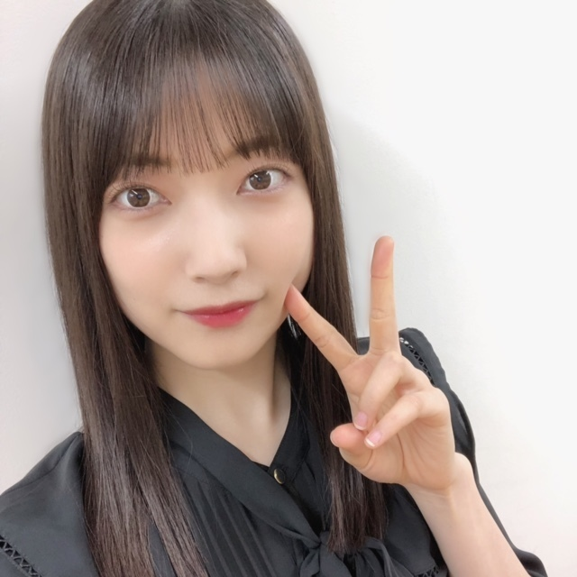

ポジティブな人になりたくて
どんなこともポジティブに変換
時に強引に
時に無理矢理
そうやって変換し続けていたら
高速変換の技術が身についた
疲れたなあってときは
頑張ったなあ
できなかったなあってときは
できるようになりたい気持ちがあるんだぞー!
無計画だったなあってときは
次は何かテーマを決めて楽しくやろう!と!!!
こうやって言葉を変えれば
気持ちも変わって
次へのスタートも早く切れる
3つめの変換は昨日のSHOWROOMについて!
トークの方で4月のうちにやりたいなという話をしていて、
なるべく早めにやりたいなと思ってたいたのでやってみたのですが、、
とてもゆる〜くなってしまいました、、
オーディション以来で、
1人での配信は約3年ぶりだったので緊張しました〜!
見てくださったみなさんありがとうございました!!!
とてもとてもまったりでしたが、
配信の仕方だったりコメントの見方だったり色々なことを思い出せたので、
やってみてよかったなあと思います!
次回は何かテーマを決めて、
このお話をするぞ!って計画を立ててやってみます!!!
変換コーナーもいいですね✴︎
何かポジティブに変換して欲しいことがあったら集めててください!
もっと楽しんでいただけるような充実したSHOWROOMができるように、
試行錯誤していきたいです!!!

🤍明日5月18日（火）19:57〜
NHK「うたコン」さんに櫻坂46が出演させていただきます✨
ぜひぜひ、ご覧ください!!!
⭐︎⭐︎⭐︎⭐︎
大園玲